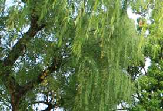
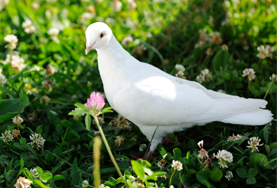
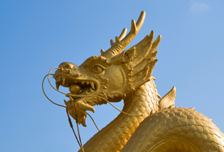

천안상징물

- 천안시의 상징나무능수버들
- 들이나 강가에서 자라는 낙엽교목, 가로수로 쓰임
천안의 대외적 이미지로 가장 강함
능소아가씨와 박현수의 전설을 간직하고 있음
- 천안시의 상징꽃 개나리
- 관상용으로 재배되는 낙엽관목
잎보다 꽃이 먼저 펴 봄소식을 전함
꽃말 : 희망

- 천안시의 상징새 비둘기
- 성질이 온순하고 사람을 잘 따름
인류와 관계가 깊고 평화를 상징
우리나라에 5종이 있음
(멧비둘기, 양비둘기, 흑비둘기, 염주비둘기, 녹색비둘기)

- 천안시의 상징동물 용
- 신화와 전설에 등장하는 상상의 동물
위엄이 있고 치수의 영물로 지칭
오룡쟁주의 지세를 가진 천안의 지명과 관련이 많음